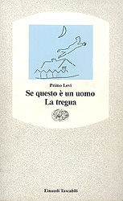

Questo romanzo fu scritto
nel periodo immediatamente successivo al rientro in Italia, tra
la fine del 1945 e l’inizio del 1945. Narra le sue esperienze di deportato
nel Lager nazista di Buna-Monowitz nei pressi di Aushwitz, dall’arresto
avvenuto il 13 dicembre 1943, quando viene sorpreso in montagna, fino al
momento della sua liberazione dal Lager, il 27 gennaio 1945.
Nella prefazione Levi
scrive:
“Questo mio libro, in
fatto di particolari atroci, non aggiunge nulla a quanto è ormai
noto ai lettori di tutto il mondo sull’inquietante argomento dei campi
di distruzione. Esso non è stato scritto allo scopo di formulare
nuovi capi d’accusa; potrà piuttosto fornire documenti per uno studio
pacato di alcuni aspetti dell’animo umano.
(…) A molti, individui
o popoli, può accadere di ritenere, più o meno consapevolmente,
che “ogni straniero è nemico”. Per lo più questa convinzione
giace in fondo agli animi come una infezione latente; si manifesta solo
in atti saltuari e incoordinati, e non sta all’origine di un sistema di
pensiero. Ma quando questo avviene, quando il dogma inespresso diventa
premessa maggiore di un sillogismo, allora, al termine della catena, sta
il Lager.”
Il racconto delle sue
drammatiche esperienze assume di volta in volta un andamento diverso: quello
del resoconto, in cui gli avvenimenti ci vengono esposti nella loro successione
cronologica; quello più aperto e disteso che procede per associazioni
di memoria, in cui l’autore ci presenta la vita nel campo attraverso una
serie di quadri che includono personaggi e situazioni; quello infine di
impianto diaristico, adottato nelle ultime pagine, che meglio riproduce
il precipitare degli eventi e meglio si adatta alla concitazione che assume
il racconto.
Già il titolo
rappresenta uno di quegli interrogativi della coscienza, la cui drammaticità
è tale da rendere superfluo il punto di domanda. Infatti la testimonianza
di Levi non è altro che una lunga meditazione sull’opera di annientamento
della personalità umana - sia in senso fisico che, soprattutto,
morale – che costituisce il primo obiettivo dei campi di sterminio.
Dopo averci descritto
in termini lapidari come venne catturato dai fascisti e condotto al campo
di concentramento di Fossoli, Levi affronta la descrizione del viaggio,
in un convoglio di dodici carri affollati e chiusi dall’esterno, fino ad
Auschwitz.
Giunti a destinazione,
comincia il meccanismo dell’annientamento: coloro che possono essere sfruttati
come mano d’opera, vengono condotti ai campi di lavoro; gli altri,
vecchi, bambini, inabili, avviati alle camere a gas.
“Scomparvero così
, in un istante, a tradimento, le nostre donne, i nostri genitori, i nostri
figli. Quasi nessuno ebbe modo di salutarli. Li vedemmo un po’ di tempo
come una massa oscura all’altra estremità della banchina, poi non
vedemmo più nulla.”
Quelli abili vengono
trasportati al campo di lavoro assegnato. Una insegna vivamente illuminata
ARBEIT MACHT FREI (Il lavoro rende liberi) sovrasta la porta del campo.
Dopo questo impatto beffardo e grottesco, i prigionieri vengono spogliati,non
solo in senso metaforico, di ogni dignità umana, rivestiti di casacche
a righe, con zoccoli, tatuati sul braccio sinistro con il numero di matricola
che sostituirà il loro nome e servirà anche a cancellare
la loro identità. Il nome dell’autore non è più Primo
Levi, ma 174517.
“Si immagini ora un uomo
a cui, insieme con le persone amate, vengano tolti la sua casa, le sue
abitudini, i suoi abiti, tutto infine, letteralmente tutto quanto possiede:
sarà un uomo vuoto, ridotto a sofferenza e bisogno, dimentico di
dignità e discernimento, poiché accade facilmente, a chi
ha perso tutto, di perdere se stesso.”
La narrazione prosegue
addentrandosi nella descrizione di quell’inferno, difficilmente immaginabile
per chi non ne abbia fatto esperienza. Il campo in cui viene rinchiuso
l’autore è costituito da una quarantina di baracche, dette Blocks,
destinate agli ebrei, e da altri alloggiamenti in cui i comandanti del
campo (Kapos) e i prigionieri tedeschi di razza ariana, politici e criminali
(Reichsdeutsche).
Tutti gli internati vengono
trasferiti durante il giorno presso una fabbrica di gomma, la Buna. E sotto
la sorveglianza di un Kapo, svolgono un lavoro massacrante. I più
deboli presto soccombono alla fatica, alle privazioni, alle malattie e
al freddo.
“Avevamo deciso
di trovarci, noi italiani, ogni domenica sera in un angolo del Lager; ma
abbiamo subito smesso, perché era troppo triste contarci e trovarci
ogni volta più pochi, e più deformi, e più squallidi.
Ed era faticoso fare quei pochi passi: e poi, a ritrovarsi, accadeva di
ricordare e di pensare, ed era meglio non farlo”
Ma l’aspetto più
tragico non è costituito, come si potrebbe pensare, dalla lotta
giornaliera per la sopravvivenza, ma dal fatto che all’interno del Lager
si riproducono le medesime strutture che governano qualsiasi tipo di società:
il privilegio, l’ingiustizia, il sopruso, l’abilità personale, l’astuzia
svolgono un ruolo determinante, dando luogo a una gerarchia di oppressori
e oppressi. Le privazioni inferociscono gli animi e la degradazione travalica
ogni limite.
La lotta per la vita,
ridotta al suo meccanismo primitivo, si configura in termini biologici
come uno spietato processo di selezione naturale dove tutte le sfumature
si annullano e dove l’unico elemento di differenziazione tra gli uomini
è determinato soltanto dalla capacità o incapacità
di sopravvivere, evidenziando due sole categorie: i salvati e i sommersi.
“Nella storia e nella
vita pare talvolta di discernere una legge feroce, che suona ‘A chi ha,
sarà dato; a chi non ha, a quello sarà tolto’. Nel Lager,
dove l’uomo è solo e la lotta per la vita si riduce al suo meccanismo
primordiale, la legge iniqua è apertamente in vigore e riconosciuta
da tutti.”
Incontriamo così
l’ebreo galiziano Schepschel, che riesce a sopravvivere grazie ad espedienti
e traffici di ogni genere, l’ingegnere Alfred L., che riesce a conquistarsi
una posizione di preminenza, il giovane ed effemminato Henri, che ha compreso
i tre metodi di sopravvivenza in quell’inferno che è il Lager: sapersi
organizzare, praticare il furto con perizia sistematica e suscitare negli
altri pietà.
Ma accanto alla schiera
dei salvati, esiste quella, assai più estesa e spettrale dei sommersi,
destinati a morte sicura. L’autore ce ne offre una tragica esemplificazione
nella figura di “Zero Diciotto”, soprannominato così dalle ultimie
cifre del suo numero di matricola. Egli è talmente indifferente
a tutto che non reagisce più nemmeno ai maltrattamenti e lavora
più degli altri, finchè le forze glielo permettono.
“Quando parla, quando
guarda, dà l’impressione di essere vuoto interiormente, nulla più
che un involucro, come certe spoglie di insetti che si trovano in riva
agli stagni, attaccate con un filo ai sassi, e il vento le scuote”. E’
questa l’agghiacciante incarnazione della metamorfosi di un uomo sottoposto
all’opera di stritolamento e annientamento messa in atto dal Lager.
Poi, primo Levi racconta
che, trasportando un carico pesante dalla ferrovia al magazzino della fabbrica
di gomma, cade e si ferisce un piede. Viene mandato all’infermeria, dove
assiste all’annientamento dei malati. Trasferito in un altro Block, ha
la fortuna di incontrare Alberto, il migliore amico che si è fatto
nel campo, e con lui troverà il modo di essere assegnato al Kommando
chimico, essendo lui laureato in chimica col massimo dei voti. Superato
fortunatamente l’esame, benchè sostenuto in lingua tedesca, riesce
ad evitare i lavori più pesanti.
L’autore raaconta anche
il suo incontro con Lorenzo, un operaio civile italiano che lavorava alla
fabbrica della gomma non in qualità di prigioniero e che, mosso
a compassione e senza pretendere niente in cambio, per sei mesi ogni
giorno gli procurò un pezzo di pane e gli avanzi del proprio rancio.
“ Io credo proprio a
Lorenzo debbo di eesere vivo oggi; e non tanto per il suo aiuto materiale,
quanto per avermi costantemente rammentato(…) che ancora esisteva un mondo
giusto al di fuori del nostro…”
Un altro episodio molto
intenso riguarda la “selezione” avvenuta nell’ottobre ‘44, quando le SS
affrontano il problema di ridurre il numero dei prigionieri, in continuo
aumento, che affollano il campo: Il sistema più sbrigativo è
quello di sbarazzarsi dei prigionieri meno validi, inviandoli nelle camere
a gas. Levi descrive questa scena agghiacciante: agli internati viene consegnata
una scheda, dovranno sfilare nudi davanti ad un sottufficiale delle SS,
il quale “con uno sgurdo di faccia e di schiena giudica della sorte di
ognuno, e consegna a sua volta la scheda all’uomo alla sua destra o all’uomo
alla sua sinistra, e questo è la vita o la morte di ciascuno di
noi”.
Nel frattempo hanno inizio
i bombardamenti alleati sull’Alte Slesia, tutto lascia presagire una prossima
caduta del Terzo Reich. Il ritmo di lavoro dei prigionieri rallenta e si
attenuano le sofferenze. Ma verso la fine del ‘44, dei novantasei italiani
internati nel campo, solo ventuno sono ancora in vita, ma in condizioni
tali che difficilmente riusciranno a sopravvivere per molto. L’autore ce
la fa soltanto perché lavora al laboratorio chimico, ma
“la pena del ricordarsi,
il vecchio feroce struggimento di sentirsi uomo, che mi assalta come un
cane all’istante in cui la coscienza esce dal buio. Allora prendo la matita
e il quaderno e scrivo quello che non saprei mai dire a nessuno”.
La prima stesura del
romanzo risale infatti a questo periodo, in cui l’autore avverte la necessità
di “sopravvivere” per poter “testimoniare”.
La narrazione di questo
periodo si conclude con un episodio altamente drammatico: l’impiccagione
di un uomo accusato di aver organizzato un complotto per l’ammutinamento
dei prigionieri del campo. E gli altri deportati sono rimasti ad assistere,
senza dare alcun segnale di solidarietà.
Poi il racconto assume
un ritmo diverso, il fronte russo si sta avvicinando e i tedeschi sono
coscienti della loro imminente caduta. Secondo le istruzioni impartite
da Himmler fanno evacuare i campi di sterminio e distruggono gli impianti,
affinché non rimanga traccia dei Lager. Gli avvenimenti vengono
narrati in forma di diario.
L’autore intanto si è
ammalato si è ammalato di scarlattina ed è ricoverato nelle
baracche adibite ad ospedale. Assiste alla partenza di circa ventimila
compagni, che moriranno tutti, come era nei piani, durante un’interminabile
marcia attraverso la Germania. I malati, circa ottocento, rimangono nel
Lager abbandonati a se stessi, senza cure, né acqua, né cibo,
al freddo, decimati dal tifo, dalla difterite, dalla dissenteria. Levi
è tra i pochissimi che riescono a sopravvivere e il romanzo si conclude
con la cronaca di quei terribili giorni, dal 19 al 27 gennaio 1945.
Quando arrivano i Russi,
lo spettacolo che si offre ai loro occhi è quello terrificante dei
cadaveri che si ammucchiano sulla neve e dei pochi superstiti che si aggirano
come spettri tra le rovine del campo. Uno spettacolo che suggella in modo
emblematico l’opera di sterminio programmatico messa in atto dal nazismo.
Il romanzo, come si è
detto, nasce dall’urgenza di rendere partecipi gli altri delle esperienze
vissute, ma mantiene una certa imparzialità nel giudicare la Germania
e il suo popolo. Non accade mai di imbatterci in espressioni di viscerale
risentimento o di incontrollato furore. Il suo giudizio si mantiene sempre
con lucidità su un tono di condanna morale.
Il libro è però
caratterizzato dalla concitazione di un messaggio indifferibile e l’impianto
narrativo segue l’incalzare tumultuoso con cui i ricordi si affollano alla
memoria. Ma questi, che potrebbero essere visti come difetti, conferiscono
invece all’opera il pregio dell’immediatezza, quel carattere di appassionata
confessione, di concitato abbandono al flusso dei ricordi.